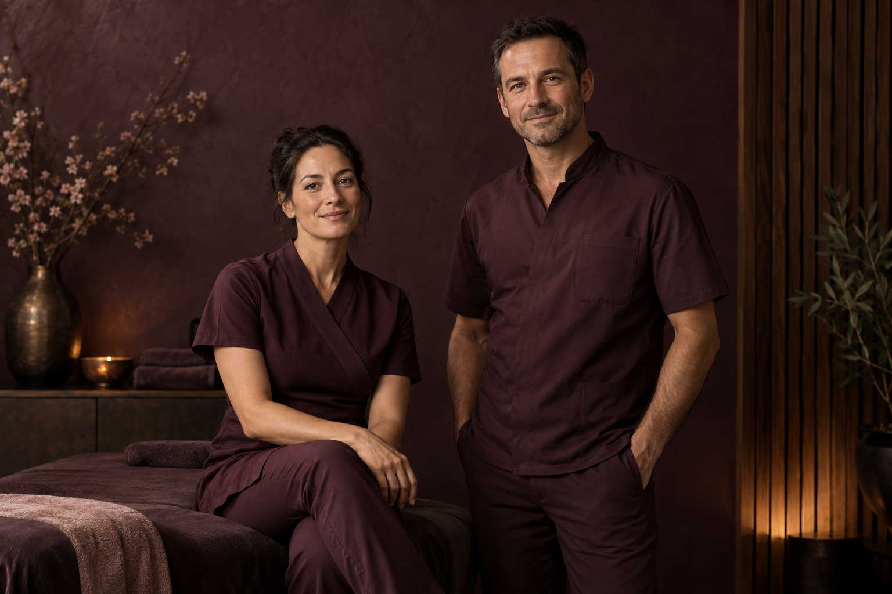
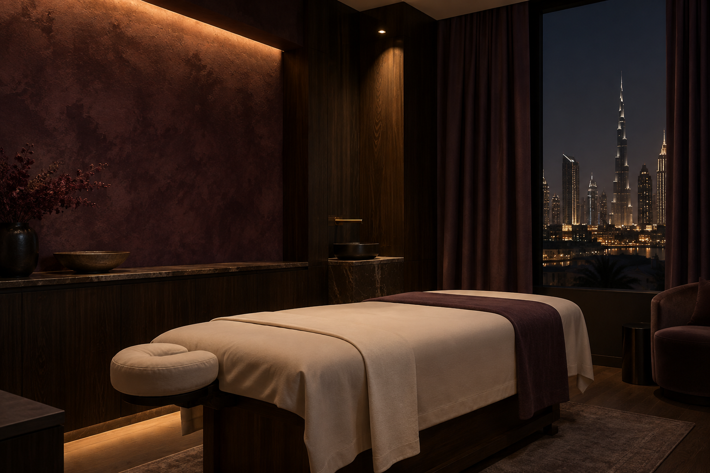

Массаж спины
Внимание к спине, шее и плечам.
Когда город не сбавляет темп,
найдите свой. Персональная работа
с телом — в спокойном ритме.

Массаж спины и плеч.
Точная, бережная работа с тем,
что накопилось за день.
Мы начинаем с разговора.
Чтобы понять ваше тело,
а не следовать шаблону.
Ваше состояние, привычки и пожелания
определяют характер сеанса.
Подбираем технику и интенсивность.
Остаёмся внимательными к обратной связи.
Приватная атмосфера и внимание к деталям.
Пространство, в котором можно выдохнуть.

Знание тела. Чуткость к человеку.
Наша работа начинается там,
где появляется доверие.
Расслабление · работа с напряжением
Восстановление · спортивный массаж
«Впервые за долгое время
я почувствовала, что можно
никуда не спешить.»
«Очень бережная работа.
Меня услышали с первых минут.»
«Тот редкий час, который
полностью принадлежит тебе.»
Примеры отзывов для концепта
Тёплый свет. Мягкий текстиль.
Приватное пространство,
в котором всё на своём месте.

Приглушить свет.
Услышать себя.
Остались вопросы?
Обсудим их перед вашим визитом.
Расскажите о своём состоянии и пожеланиях. Мы поможем подобрать подходящий формат и обсудим комфортную интенсивность перед началом сеанса.
Выберите удобную одежду. Об особенностях подготовки расскажем при подтверждении записи.
Продолжительность зависит от формата. Согласуем её с вами при записи.
Свяжитесь с нами заранее, чтобы подобрать другое удобное время.
Напишите нам. Поможем подобрать
удобную дату и ответим на вопросы.
Внимательно. Лично. Без спешки.